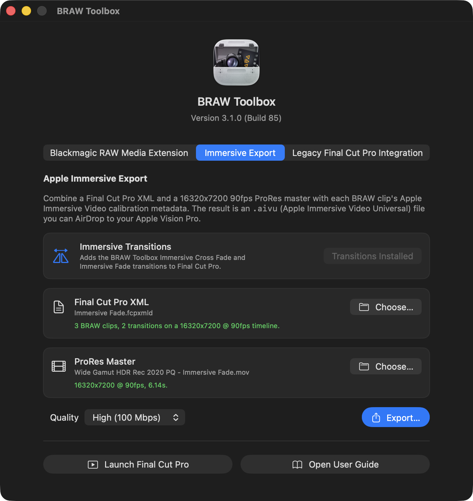
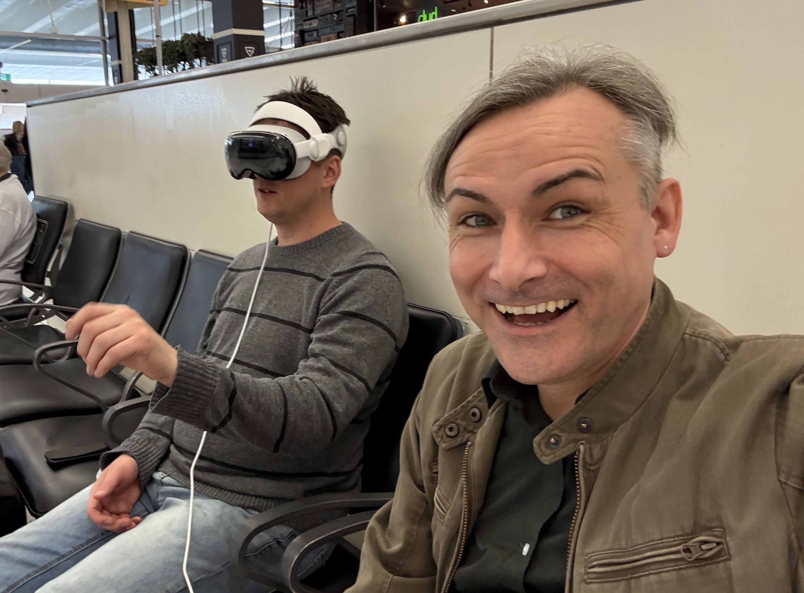
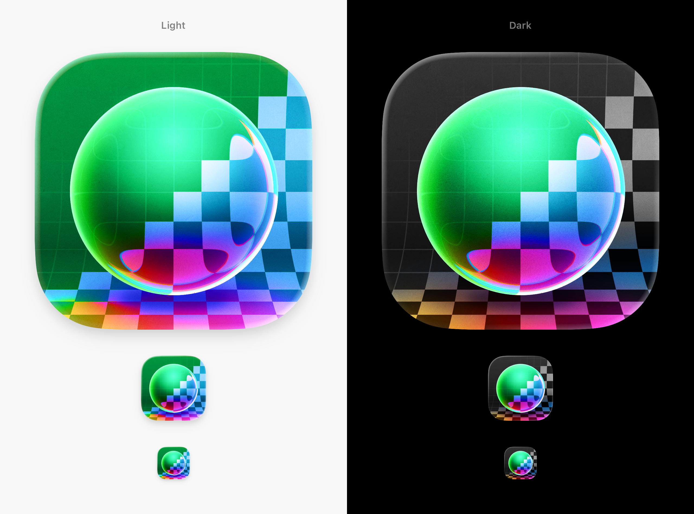
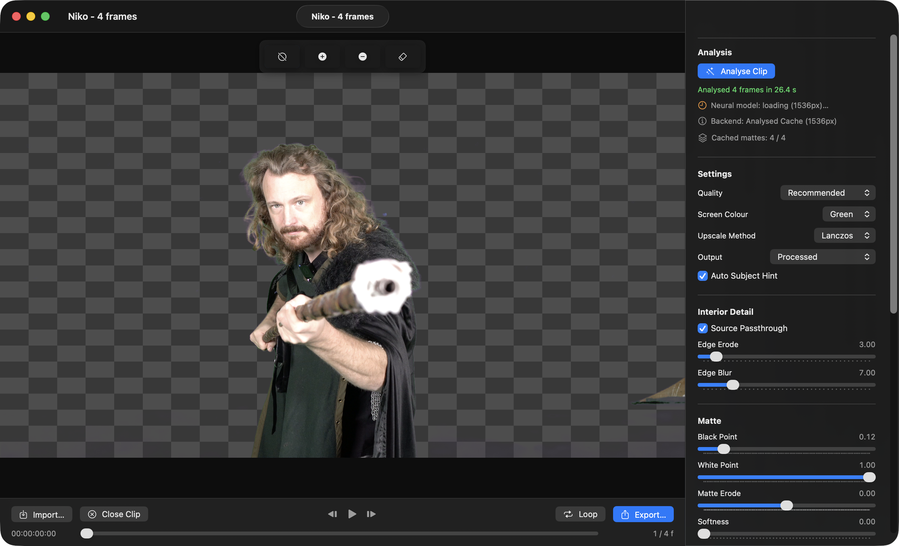
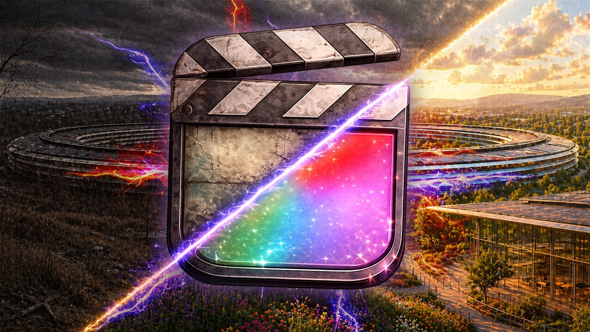
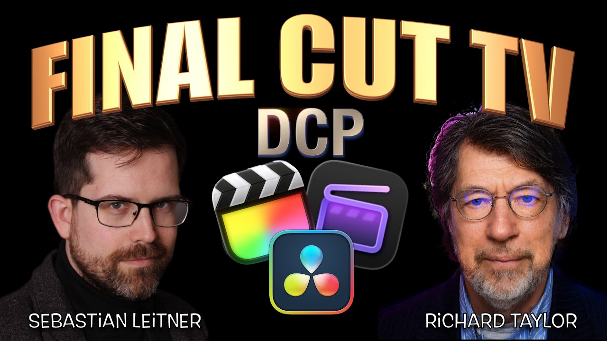

2026
May
7th May 2026
Happy Thursday! 👋
It's release day at FCP Cafe! 🥳
BRAW Toolbox v3.1.0 and CorridorKey by LateNite v1.0.0 are out now on the Mac App Store! 🔥
This release of BRAW Toolbox has MAJOR under-the-hood improvements for the Media Extension in terms of playback performance.
The playback performance now more closely matches the legacy BRAW Toolbox Workflow Extension. It's not quite as good as DaVinci Resolve - but it's super close now.
I'm also continuing to explore more niche Immersive workflows.
You can now edit 16320x7200 90fps side-by-side Blackmagic URSA Cine Immersive directly in Final Cut Pro, add Immersive transitions, export out a ProRes 4444 + FCPXML, then use BRAW Toolbox to create a .aivu (Apple Immersive Video Universal) file that you can watch in the Apple Immersive Video Utility and also AirDrop to your Apple Vision Pro!

However, full disclosure, this is still VERY MUCH a work-in-progress proof-of-concept.

I don't expect anyone shooting on Blackmagic URSA Cine Immersive cameras to drop DaVinci Resolve today and start cutting in Final Cut Pro.

But it does help open a lot of workflows and possibilities.
Now if you own a Blackmagic URSA Cine Immersive camera, rather than having to fire up DaVinci Resolve to preview your Blackmagic RAW files, you can just press SPACEBAR in Finder, and use QuickLook.
If you want to preview a bunch of Immersive files on your Vision Pro, you can easily just throw the clips on a FCP timeline, export a ProRes and FCPXML, then use BRAW Toolbox to quickly create a .aivu (Apple Immersive Video Universal) file.
This is really just the beginning though... streaming from Final Cut Pro to Vision Pro is definitely something I'm experimenting with.
There's also a lot of features in DaVinci Resolve like masking and graphics/titles - that I need to solve in Final Cut Pro.
There's been a lot of discussion in the nerd media recently about how "Apple has given up on Vision Pro".
For example, MacRumors wrote Apple Has Given Up on the Vision Pro After M5 Refresh Flop.
AppleInsider wrote Rumored Apple Vision Pro team break-up isn't a death knell for the product.
People LOVE to hate on the Vision Pro and Immersive. Especially Mark Gurman.
I don't personally own a Vision Pro, but I have used Iain Anderson's at an airport, and I did get an amazing demo at Apple Park during the Final Cut Pro Creative Summit.

Back on 14th November 2024 I wrote:
Yesterday, I mentioned that I saw something I wasn't allowed to talk about, but today it's out and I can finally talk about it!
As part of my Apple Vision Pro Demo at Apple Park I was very lucky to watch a sneak peak of The Weeknd: Open Hearts on Apple Vision Pro.
It's a new immersive music experience that features Canadian singer-songwriter The Weeknd, filmed in ultra-high resolution 180-degree Apple Immersive Video with Spatial Audio.
You can watch a trailer here:
It's insane. It was such an amazing experience on Apple Vision Pro.
The most amazing part is that there's a section in the music video, where there's a lot of smoke from smoke machines.
As someone who worked in live productions and concert lighting for many years, I've worked with smoke machines a LOT.
When watching this music video in Apple Vision Pro, I could literally TASTE the smoke machines.
My brain was apparently so convinced that what I was seeing was real, that it somehow triggered some prior memories and made me taste and feel something, that wasn't actually real.
This is super interesting, and it's really something you need to watch on Apple Vision Pro to experience.
The music video is amazing - it has some incredible visual effects, and the fact you can look around the frame is pretty amazing - the 2D trailer above really doesn't do it justice.
If you get a chance to experience this epic music video in Apple Vision Pro, please do. You can watch it for free through the Apple TV app on Apple Vision Pro.
As someone who fricken LOVED Twisters in 4DX (my DREAM JOB is programming 4DX experiences) - you can watch a fun little video on YouTube:
...I can absolutely see the appeal of Immersive video.
Needless to say, I think the rumours of Apple "giving up" on Vision Pro are simply that... dumb rumours.
Brenton Henry writes on his blog post, Mark Gurman Has Been Burying the Apple Vision Pro Since Before It Shipped. I’m Out of Patience:
Mark Gurman has personally written some variant of "the Apple Vision Pro is dying" roughly every three months for the past three years. MacRumors has syndicated each one. 9to5Mac has helped — including one delicious case I'll come back to in a minute. AppleInsider has occasionally played referee. The story has been wrong every single time. It is wrong this time too. And the cumulative damage of three years of inaccurate obituaries is being paid by the thousands of developers, studios, broadcast engineers, surgeons, educators, and small-business operators trying to build companies on this platform — me included.
If you search for Vision Pro jobs on Apple's Jobs site - there's literally 600+ jobs listed.
Apple is not giving up on Vision Pro. Blackmagic is not giving up on Immersive - in fact, if you watch Blackmagic's pre-NAB video, you'll see they're going more full-steam-ahead with Immersive than any other company in the world.
Dan Moren writes on Six Colors, The Vision Pro: Not quite dead yet:
Now, I’m not privy to MacRumors’s sources but I’m going to say that I’m skeptical of this pronouncement. And I’m not the only one: Jonathan Wight, who worked in Apple’s AR/VR group until 2022, disputed the report on Mastodon, and that jibes with what I’ve heard privately.
John Gruber writes on Daring Fireball, On the Future of Apple’s Vision Platform:
It’s a strange thing for MacRumors to state so categorically something I believe has no truth to it whatsoever. And if there is some truth to it, it’s not what the article implies, which is that the whole thing has been shut down, somehow without the world knowing until now. Just two weeks ago John Ternus and Greg Joswiak were interviewed by Mark Spoonauer at Tom’s Guide, and both spoke of a bright future for spatial computing. Joz describing Vision Pro as a product pulled into the present from the future is a good way of emphasizing the yet regarding a product — and category — that’s not there yet. Apple executives know how to give a non-answer answer to a question they don’t want to answer honestly. (Exhibit A: Tim Cook “squashing” rumors that he was about to retire ... one month before he announced he was stepping aside as CEO.) The way Ternus and Joz were talking about the platform, and immersive content, this month was not lacking in enthusiasm. It was asking for patience.
I think Immersive is here to stay. I think the Immersive team at Apple is working as hard as every other department at Apple.
The Vision Pro is expensive, yes. But if you get to watch The Weeknd: Open Hearts music video on Apple Vision Pro, it'll blow your mind - it's incredible.
Whilst I don't imagine I'll be buying a Blackmagic URSA Cine Immersive or a Vision Pro anytime soon - I LOVE the idea of supporting Immersive filmmakers who WANT to use Final Cut Pro.
This is the key for me... I don't like the fact that people are FORCED to use DaVinci Resolve.
Whilst I absolutely LOVE Blackmagic, and especially Grant (you can read my previous massive blog post about Blackmagic's history) - I still strongly maintain that Final Cut Pro is just more fun to do creative editing with.
I'm sure eventually, we'll see Vision Air from Apple. It's just a matter of time.
It's also interesting to see what lays ahead for Apple, for example, Tim Cook returned $1 trillion to shareholders. John Ternus is being given permission to keep it.
Alina Maria Stan writes:
Apple dropped its net cash neutral policy after seven years, signalling that incoming CEO John Ternus will have greater flexibility to invest in AI infrastructure and acquisitions rather than returning all excess cash to shareholders. The shift came alongside Q2 2026 results of $111.2 billion in revenue and a new $100 billion buyback, but analysts read the policy change as preparation for a more investment-led strategy.
Certainly interesting times ahead!
In the meantime...
BRAW Toolbox v3.1.0 (Build 85) contains the following changes:
🔨 Improvements:
- This release has MAJOR under-the-hood improvements for the Media Extension in terms of playback performance. The playback performance now more closely matches the legacy BRAW Toolbox Workflow Extension. It's not quite as good as DaVinci Resolve - but it's super close now. Thanks for reporting Dustin Painter & Robin! Thanks for your help Final Cut Pro team! Thanks for your ideas and suggestions AdrianEddy & Brian Elliott Tate!
- Gyroflow support in the Media Extension has also had MAJOR under-the-hood improvements. The results in the Media Extension should now exactly match the official Gyroflow application and Gyroflow Toolbox. Thanks for reporting mhbsavant! Thanks heaps AdrianEddy!
- The Media Extension now has the ability to read Gyroflow projects as sidecar files. If your BRAW file has a
.gyroflowfile with the same filename next to it, the Media Extension will use the Gyroflow settings from that file. - There's a new Immersive Export feature in BRAW Toolbox. If you create a 16320x7200 @ 90fps timeline in Final Cut Pro and cut together Blackmagic RAW Immersive clips using the Media Extension, you can now export a ProRes and FCPXML, and use BRAW Toolbox to generate an Apple Immersive Video Universal (
.aivu) file that can be loaded on the Apple Vision Pro. - We now bundle two transitions in Final Cut Pro, Immersive Fade and Immersive Cross Fade, that don't do anything visually in your Final Cut Pro timeline, but tell the Immersive Export tool to apply transitions to these clips via metadata.
🐞 Bug Fix:
- The BRAW Toolbox v3.0.0 Media Extension was creating cache files that were not always correctly cleaned up - wasting hard drive space. This is now fixed. Thanks for reporting Iain Anderson & Christian Miranda!
- If the BRAW Toolobox v3.0.0 Media Extension was unexpectedly taking up hard drive space, please manually delete the
/Users/YOUR-USER-NAME/Library/Containers/com.latenitefilms.BRAWToolbox.FormatReaderand/Users/YOUR-USER-NAME/Library/Containers/com.latenitefilms.BRAWToolbox.RAWProcessorfolders on your system to clean up the space. - Fixed a bug where Blackmagic RAW clips were not displaying correctly in Apple Compressor. Thanks for your help Final Cut Pro team!
- The Launch Final Cut Pro button in the BRAW Toolbox application now works with Final Cut Pro Creator Studio (subscription) and the Final Cut Pro v11 free trial. Thanks for reporting Sebastian Leitner!
- Fixed a bug in the Final Cut Pro Workflow Extension, where the Relink BRAW Clips within an LIBRARY / EVENT / PROJECT Toolbox didn't support Final Cut Pro Creator Studio (subscription) or Final Cut Pro v11 free trial. Thanks for reporting Aldo!
- Reduced the application bundle file size by compressing a TIFF. Thanks for reporting Dmitry Lavrov!
You can download and learn more on the BRAW Toolbox website.
As for CorridorKey by LateNite...

CorridorKey by LateNite brings Corridor Digital's CorridorKey to Final Cut Pro. 🥳
This is NOT a fork. We've taken the blue and green CorridorKey models, converted them to MLX and built a completely new Swift & Swift UI engine powered by modern Apple frameworks. 🔥
Whilst there are already some great fork's of CorridorKey, such as EZ-CorridorKey, none of them are purposely build for Mac & Apple Silicon.
It brings an Effect directly into Final Cut Pro, as well as a Standalone Editor.
Optimised for ProRes in and out with hardware decoding and encoding. 🏎️
It has been built for Final Cut Pro editors.
It gives you all the power of CorridorKey, directly in your Final Cut Pro timeline.

It has been built for Apple Silicon Mac's.
It makes full use of the GPU, Neural Engine, Metal and MPX - pushing the hardware to the max. 🔥
If you're working with ProRes or HEVC, it makes use of Apple Silicon's hardware encoders and decoders.
It uses Apple's Vision Framework to use machine learning to "cut out" any foreground people, to use as a "hint" for CorridorKey.

CorridorKey by LateNite v1.0.0 (Build 10) contains the following changes:
🔨 Improvements:
- This is the first release on the Mac App Store! 🥳
- We now have a new icon, designed by the amazing Matthew Skiles!
- Now runs on macOS Sonoma 14.6 or later (on Apple Silicon only).
- Increased the default window size for the Standalone Editor.
- Added a built-in default Custom Image Background of a castle for easier testing out-of-the-box.
- Combined two MLX render stages for slightly faster performance.
You can download and learn more on the CorridorKey by LateNite website.
And because it's a FREEZING day in Melbourne, here's some interesting videos I've come across to keep you warm and entertained:
Marques Brownlee shares My Take on The New Apple:
Matthew O'Brien shares So How Do We Feel About Final Cut Pro?:

Jenn Jager shares 9 Time Saving (and Butt Saving!) AI Tools in FCP:
Finally, I came across this AWESOME project:
We’re working on 3D Movie Maker Remastered, a browser-based community remake of Microsoft’s 3D Movie Maker from 1995.
We already have an early editor prototype with characters, animations, depth-based backgrounds, timeline tools, onion skin, take management, and early video export. Long term, it could also grow into a lightweight tool for previs, storyboard animation, scene blocking, and 2D/3D animation/compositing.
We’re currently looking for help with assets, especially backgrounds, characters, textures, rigging, animation, cutscenes, and general Blender/compositing work.
It’s currently a community passion project, but if you’re into retro software, animation tools, or pre-rendered 90s workflows, feel free to reach out.
Juls / 3DMM Remastered
I grew up on 3D Movie Maker - and I fricken LOVE it - so this is an awesome project!
You can learn more on their website.
Sebastian Leitner has released four free vibe-coded apps on his website:
Make It BRAW A small FCPXML/MLD tool that bulk-relinks .mov proxy edits (created externally) back to their original .braw media automatically. It also updates metadata in bulk so you can stay in FCP without loss of applied adjustments/effects – if you just installed BRAW Toolbox v3 but started the proxy edit without it before, that is.
Make It RELINK An advanced and specialized tool designed for "impossible" relinking scenarios. While FCP's native relink command is strict—requiring nearly identical metadata (duration, format, audio channels), this app is for when you know the media is correct despite those differences. The app uses a "global replace" logic to bypass FCP's internal restrictions.
Make It Move A simple tool for cloning used-media only, copying all source clips referenced in a project/edit to a new location. No need to give someone else 20 TB if you can hand over your actually used clips only. A much-needed step when working with multiple editors or transferring an edit to a different machine.
Make It SRT A small but mighty subtitles utility for DCI workflows, which cleans and checks SRTs exported from an NLE or delivered by a transcription AI to make them SMPTE standard-compliant. It takes FPS conversions, character limits depending on resolution, and fixed time shifts into account. It also batch-extracts SRTs from given FCPXMLs.
You can hear him talk about them on Richard Taylor's YouTube channel:

You can download and learn more on his website.
Tomislav Brdjanović writes:
Hey Final Cut Pro community!
I'm a filmmaker and videographer with 23 years in broadcast television. I got tired of retyping timecodes on paper, so 1 built AVScript.
What it does:
- Mark IN/OUT points with JKL navigation
- Transcribe footage with Al select text to set IN/OUT automatically
- Story Al analyzes your project and suggests narrative structure
- Export FCPXML 1.13 with full metadata directly into Final Cut Pro
- Works on web, mobile and desktop
New in v2 - MetaFlow: Import one FCPXML and get your entire project in FCP with transcripts, speaker tags, emotion markers and scene keywords. Already tagged. Already searchable. The core editor is free and open source.
Looking for 10-15 people to test the workflow and tell me what's broken, what's missing, what doesn't make sense.
First testers get 3 months Pro free. No credit card needed. Happy to answer any questions!
You can learn more on the AVScript website.
Doza Assist v3.2.2 is out now.
A pre-beta security release plus a Transcript-tab editing pass: search, highlighter-strength label colors, right-click to remove a label, and a multi-step Undo button.
You can find the full release notes on GitHub.
You can download and learn more on GitHub.